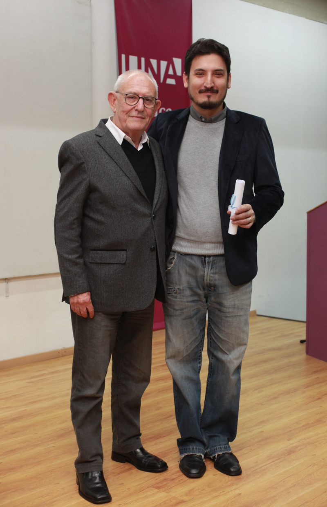

Bio
- Estudió Crítica de Cine y Tv en la fundación TEBA.
- Luego, se recibió de Crítico de Artes, especializado en cine, en la Universidad Nacional de las Artes (UNA).
- Conduce en radio el programa Cine Continuado, por puntocero.me; y co-conduce el primer podcast sobre cine argentino, Sucesos Argentinos.
- Actualmente dicta cursos sobre aproximación a la crítica de cine para alumnos sin conocimientos previos y para avanzados.
- También escribe en A Sala Llena.
